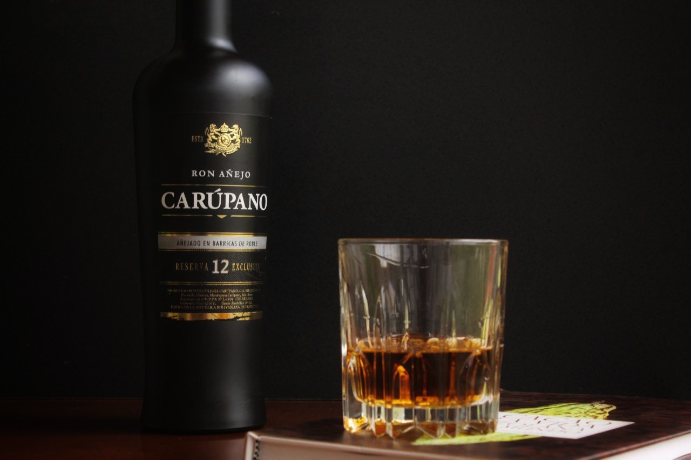
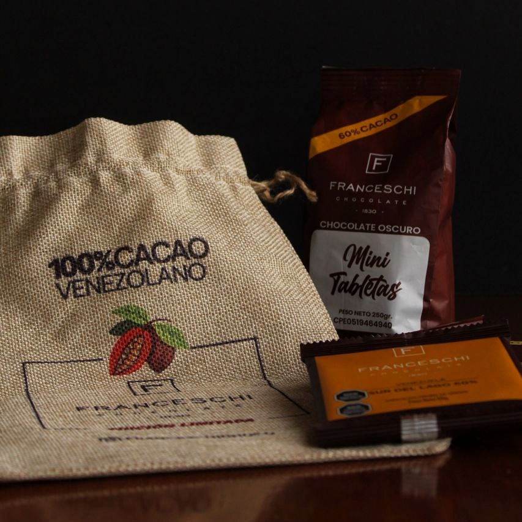
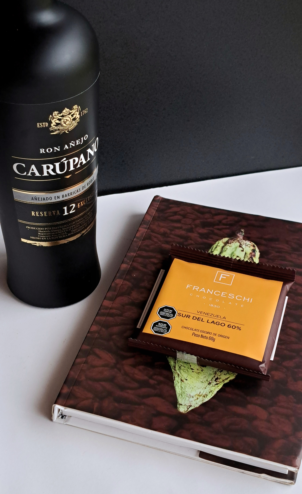

Identidad que cruza fronteras: el cacao y el ron venezolano conquistan el mundo


Mucho más que sabor
En el estado Sucre, Venezuela, tierra de hermosos paisajes, nacen productos de alta calidad que cuentan historias. La gastronomía, entendida en su sentido más amplio y multidimensional como saberes, técnicas, historia, impacto social y sostenibilidad, ofrece mucho más que comida; permite crear relatos que cruzan fronteras y conectan con consumidores que buscan autenticidad.
Hoy, en mercados saturados de productos parecidos, esas historias, el arraigo cultural y la identidad se convierten en auténticas ventajas competitivas. Sucre, conocido por sus playas, su clima y sus plantaciones de cacao, concentra esa magia que permite a empresas como Cacao San José, con su marca de chocolates Franceschi, y a Destilería Carúpano, con sus rones de tradición centenaria, ofrecer productos de alta calidad que llevan consigo una cultura y una historia.
Según la FAO (2017), ese valor agregado surge cuando un producto deja de ser solo materia prima para convertirse en algo que refleja historia, calidad y autenticidad. Y aunque Venezuela no figura entre los principales exportadores de alimentos o bebidas de la región, ha logrado destacar precisamente gracias a esa transformación. Por ejemplo, entre enero y abril del presente año, el ron venezolano exportó más de dos millones de cajas a cien países (Banca y Negocios, 2025).
Detrás de esas cifras se encuentran historias reales, estrategias construidas con paciencia y pasión.
"Sembrando Cacao, Construyendo Futuro" – El Caso de Franceschi Chocolate
"El valor agregado va más hacia el desarrollo de la gente... formando al productor con estructuras que le permitan garantizar su crecimiento" – Jhoan Andrade, Gerente de Cacao San José.
De la tierra a la tableta
En la península de Paria se encuentra Cacao San José, con una hacienda llena de historia para contar a través de su marca de chocolate Franceschi. Allí han sabido integrar calidad, sostenibilidad, identidad cultural y desarrollo comunitario, apoyándose en tres pilares fundamentales que sostienen su propuesta diferenciadora.
La trazabilidad total es uno de esos pilares, cada lote de cacao con el que se hace su chocolate puede rastrearse desde el grano, hasta el nombre del productor y su ubicación, haciendo que su chocolate sea 100% trazable. Incluso en algunos empaques de sus chocolates premium aparece el número del lote con el que se elaboró. Esto genera confianza en la calidad y seguridad del producto, promoviendo una reputación positiva en nuevos mercados.
El segundo pilar es su cacao de calidad. Franceschi preserva siete variedades criollas únicas: Ocumare 61, 67 y 77, Chuao, Guasare, Canoabo y Porcelana, además de un cacao forastero Río Caribe y un trinitario, todos cultivados con cuidado y compromiso en la Hacienda San José. Para la marca es vital que sus productos sean de alta calidad, pues esta característica también refleja la imagen que proyectan al exportar.
El tercer pilar es la Certificación B y lo que llaman “polinización social”. Como empresa B, Franceschi mide su éxito no solo en ganancias, sino en su impacto social. A través de la Fundación San José, en 13 años han impactado a 17.563 niños, 2.036 educadores, 1.586 productores y emprendedores, 4.991 cuidadores y 18.489 pacientes en servicios de salud, demostrando que su compromiso abarca toda la cadena humana detrás del cacao.
Estrategia de Mercado: “Venezuela es Cacao”
Cacao San José comprende el poder de la narrativa emocional y la conexión cultural. El storytelling es la herramienta clave para construir relaciones duraderas con consumidores, destacando no solo el producto sino también los valores, la historia y la gente detrás. Franceschi construye una narrativa de impacto social, trazabilidad, sostenibilidad y orgullo venezolano, apoyada en medios digitales, videos, lemas y contenido que humaniza el producto.
Como dice Jhoan Andrade:
“Parte del éxito es que la marca sea reconocida por los venezolanos, para que sean estos mismos venezolanos en el mundo quienes enaltezcan y hagan que ese producto termine llegando a otros clientes… ser paciente, concentrarte en hacer productos de calidad, ser eficiente en productividad… esa eficiencia es lo que te va a permitir ser competitivo en los mercados internacionales.”
Franceschi opera con un modelo de exportación que combina el posicionamiento de materias primas y productos terminados. Exporta a más de 23 países, principalmente granos, licor y manteca de cacao (90% materia prima), pero también chocolates premium (10% productos terminados) que cuentan historias del origen. Su modelo profesionaliza a pequeños productores, preserva variedades criollas únicas y posiciona al cacao venezolano como un producto con apellido propio.
Ron Carúpano – 250 años de tradición en una botella
“El ron es una bebida emblemática de Venezuela, representa la camaradería y el calor humano de los venezolanos… Ron Carúpano es más que sus productos, es una forma de ser.” – Auroberth Rojas, Gerente de Destilería Carúpano.
Fundada hace más de 250 años en el Valle de Macarapana, Ron Carúpano no es solo una marca de licor, sino un emblema del ron venezolano. Tiene pilares que la hacen única.
El agua que utilizan para elaborar el ron proviene de manantial o de pozos profundos, lo que garantiza pureza y evita olores o sabores indeseados.
El microclima excepcional del valle de Macarapana, en Carúpano, estado Sucre, permite que el envejecimiento del ron se acelere e intensifique, aportando a su sabor distintivo.
La figura de la Maestra Mezcladora, Carmen López de Bastidas, única mujer en ese rol en Venezuela, ha desarrollado durante más de 35 años los perfiles únicos de Destilería Carúpano, aportando maestría y pasión a cada botella.
Desde 2022, el “Ron de Venezuela” es una Denominación de Origen Controlada (DOC) que exige que el ron sea elaborado con 100% melaza de caña venezolana, tenga un mínimo de dos años en barricas de roble y se produzca íntegramente en el país. Esto diferencia al ron venezolano y consolida su prestigio y autenticidad.
Estrategia de Mercado: “Un legado de 250 años...”
Ron Carúpano ha construido su estrategia de mercado fusionando la herencia venezolana con la sofisticación que demanda el mercado internacional, conectando emocionalmente con los consumidores. Este relato transforma cada botella en algo más que una bebida: un fragmento de historia viva que viaja a países como Estados Unidos y Europa. Productos como el “Legendario” o el “Reserva 21” se han convertido en símbolos de lujo respaldados por premios internacionales que consolidan su prestigio.
Retos y Oportunidades: ¿Cómo Cruzar Fronteras?
"Hay que ser persistente con inteligencia... el éxito viene primero en fortalecer tu marca localmente" – Jhoan Andrade.
Ambas empresas han enfrentado barreras internas como la logística y problemas socio-políticos, así como la competencia y saturación en mercados internacionales. Sin embargo, han demostrado resiliencia y una inversión estratégica para superar esos obstáculos, priorizando calidad y confiabilidad incluso cuando esto implica costos adicionales.
Ron Carúpano ha respondido fortaleciendo la calidad como su principal argumento competitivo, mientras Franceschi ha apostado por modelos logísticos mixtos, produciendo en el extranjero cuando es necesario y manteniendo estándares que convencen a clientes internacionales pese a las dificultades internas.
Para estas marcas, la excelencia en la exportación no es fruto de la casualidad, sino el resultado de disciplina, coherencia en la calidad, eficiencia operativa y visión estratégica de largo plazo que incluye sostenibilidad.
Ron Carúpano refuerza su posicionamiento premium, y Franceschi apuesta por fortalecer primero la marca local, contar historias reales y construir relaciones de largo plazo que resistan crisis.
Cuando el valor agregado nace en casa
Tanto Ron Carúpano como Franceschi Chocolate entienden que competir en mercados internacionales no se trata solo de calidad técnica, es proyectar la identidad cultural como estrategia.
Ron Carúpano construye lujo y exclusividad desde su historia y tradición; Franceschi lo hace desde la sostenibilidad y el vínculo con productores locales. Ambas marcas han convertido el origen en ventaja competitiva y en una historia que conecta emocionalmente con el consumidor.
Cómo resume Andrade:
“Ser paciente, concentrarte en la calidad, mantener eficiencia… es lo que permite competir afuera.”
Estas entrevistas revelan cómo la identidad venezolana y su historia pueden posicionar productos en el extranjero y aportarles valor agregado sin necesidad de transformarlos completamente. Si bien exportar productos terminados y con mayor valor agregado puede impulsar significativamente la economía del país, también es posible transmitir y proyectar la identidad nacional a través de las historias que acompañan la materia prima, como ocurre con el cacao.
Esta estrategia podría replicarse con otros productos de exportación como frutas o café, que además suelen ser más sencillos de distribuir desde Venezuela.
A pesar de los retos logísticos y socio-políticos internos, la persistencia, la calidad sostenida y una narrativa de marketing que resalte la herencia y el esfuerzo humano detrás de los productos son clave para que la gastronomía venezolana cruce fronteras.
Cómo resume Franceschi:
“Ser venezolano también es eso. Saber que lo que nace aquí, puede conquistar el mundo.”
